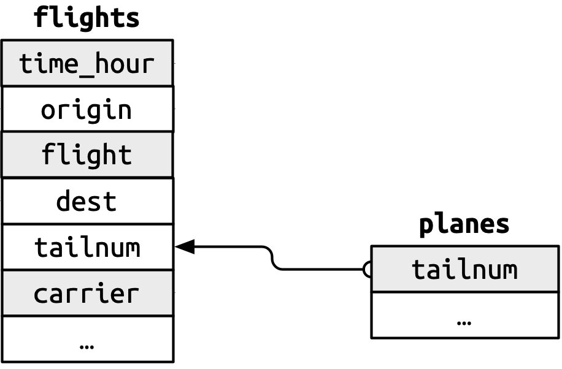

install.packages("nycflights13")Day 5: Joining Data
Overview
So far, we have been working with a single dataframe
But sometimes, data comes to us as multiple dataframes
- This is also known as a “database”
We will learn how to join data across dataframes
Recommended Reading
Hadely Wickham, R for Data Science (2e)

Set up
- We will continue to use the
gapminder-analysisproject in thedata-analysis-coursefolder on your Desktop- This is actually a different dataset, so the name for the project isn’t ideal. Naming things is hard!
- Create a new file in that project called
joining-practice.R- We will save all the demonstration code in that script
- Be sure to follow along! (don’t just watch the video without running the code)
- We will use data in the
nycflights13package to demonstrate joins, so install that first (remember you only need to install a package once, so don’t include this in your code)
- The first thing to do in our script is to load the necessary packages:
joining-practice.R
library(tidyverse)── Attaching core tidyverse packages ──────────────────────── tidyverse 2.0.0 ──
✔ dplyr 1.1.4 ✔ readr 2.1.5
✔ forcats 1.0.0 ✔ stringr 1.5.1
✔ ggplot2 3.5.2 ✔ tibble 3.2.1
✔ lubridate 1.9.4 ✔ tidyr 1.3.1
✔ purrr 1.0.4
── Conflicts ────────────────────────────────────────── tidyverse_conflicts() ──
✖ dplyr::filter() masks stats::filter()
✖ dplyr::lag() masks stats::lag()
ℹ Use the conflicted package (<http://conflicted.r-lib.org/>) to force all conflicts to become errorslibrary(nycflights13)About the nycflights13 data
- The main dataframe in
nycflights13is calledflightsand includes data about flights that departed from New York in 2013
About the nycflights13 data
You can read the helpfile with
?flightsYou can view it by typing
flights:
flights# A tibble: 336,776 × 19
year month day dep_time sched_dep_time dep_delay arr_time sched_arr_time
<int> <int> <int> <int> <int> <dbl> <int> <int>
1 2013 1 1 517 515 2 830 819
2 2013 1 1 533 529 4 850 830
3 2013 1 1 542 540 2 923 850
4 2013 1 1 544 545 -1 1004 1022
5 2013 1 1 554 600 -6 812 837
6 2013 1 1 554 558 -4 740 728
# ℹ 336,770 more rows
# ℹ 11 more variables: arr_delay <dbl>, carrier <chr>, flight <int>,
# tailnum <chr>, origin <chr>, dest <chr>, air_time <dbl>, distance <dbl>,
# hour <dbl>, minute <dbl>, time_hour <dttm>About the nycflights13 data
- The package also includes several other related dataframes:
weather: hourly meterological data for each airportplanes: construction information about each planeairports: airport names and locationsairlines: translation between two letter carrier codes and airline names
- We can read the helpfile for each one and view it in the same way as
flights(for example,?weather)
About keys
Dataframes often include a special column called the primary key
The values of the primary key are unique to each row. In other words, we can identify a row using the primary key.
The primary key is often the first column in the data, but not always
About keys
- Let’s look at an example. The primary key for
planesistailnum- The “tail number” is a unique code on the tail of each airplane
About keys: planes
planes# A tibble: 3,322 × 9
tailnum year type manufacturer model engines seats speed engine
<chr> <int> <chr> <chr> <chr> <int> <int> <int> <chr>
1 N10156 2004 Fixed wing multi … EMBRAER EMB-… 2 55 NA Turbo…
2 N102UW 1998 Fixed wing multi … AIRBUS INDU… A320… 2 182 NA Turbo…
3 N103US 1999 Fixed wing multi … AIRBUS INDU… A320… 2 182 NA Turbo…
4 N104UW 1999 Fixed wing multi … AIRBUS INDU… A320… 2 182 NA Turbo…
5 N10575 2002 Fixed wing multi … EMBRAER EMB-… 2 55 NA Turbo…
6 N105UW 1999 Fixed wing multi … AIRBUS INDU… A320… 2 182 NA Turbo…
# ℹ 3,316 more rowsAbout keys: planes
Notice that the values of tailnum appear unique, while the values of other columns may be repeated.
But we should actually check this…
Verifying the primary key
We can verify that the primary is indeed unique by counting how many times each tailnum occurs in planes:
planes |>
count(tailnum)# A tibble: 3,322 × 2
tailnum n
<chr> <int>
1 N10156 1
2 N102UW 1
3 N103US 1
4 N104UW 1
5 N10575 1
6 N105UW 1
# ℹ 3,316 more rowsVerifying the primary key
What we are really concerned with, is whether any tail number occurs more than once. Let’s check that with filter:
planes |>
count(tailnum) |>
filter(n > 1)# A tibble: 0 × 2
# ℹ 2 variables: tailnum <chr>, n <int>. . .
Good!
Verifying the primary key
Another important thing to check is missing values. We can’t identify a row if its identifier is missing!
planes |>
filter(is.na(tailnum))# A tibble: 0 × 9
# ℹ 9 variables: tailnum <chr>, year <int>, type <chr>, manufacturer <chr>,
# model <chr>, engines <int>, seats <int>, speed <int>, engine <chr>. . .
Also good!
Primary keys of other dataframes
OK, so we know the primary key of
planesistailnum.What about the other dataframes?
airports
The primary key of airports is its three-letter airport code, which is named in the the dataframe faa:
airports# A tibble: 1,458 × 8
faa name lat lon alt tz dst tzone
<chr> <chr> <dbl> <dbl> <dbl> <dbl> <chr> <chr>
1 04G Lansdowne Airport 41.1 -80.6 1044 -5 A America/Ne…
2 06A Moton Field Municipal Airport 32.5 -85.7 264 -6 A America/Ch…
3 06C Schaumburg Regional 42.0 -88.1 801 -6 A America/Ch…
4 06N Randall Airport 41.4 -74.4 523 -5 A America/Ne…
5 09J Jekyll Island Airport 31.1 -81.4 11 -5 A America/Ne…
6 0A9 Elizabethton Municipal Airport 36.4 -82.2 1593 -5 A America/Ne…
# ℹ 1,452 more rowsChallenge: Check the key
But (like I mentioned before) it’s a good idea to verify that faa is indeed a valid primary key! Can you do it?
Compound keys
Sometimes, no single column is provided as a key. Instead, multiple columns may be combined that uniquely identify each row.
For example, in the
weatherdataframe, the combination oforiginandtime_hourcombined are unique.
weather# A tibble: 26,115 × 15
origin year month day hour temp dewp humid wind_dir wind_speed wind_gust
<chr> <int> <int> <int> <int> <dbl> <dbl> <dbl> <dbl> <dbl> <dbl>
1 EWR 2013 1 1 1 39.0 26.1 59.4 270 10.4 NA
2 EWR 2013 1 1 2 39.0 27.0 61.6 250 8.06 NA
3 EWR 2013 1 1 3 39.0 28.0 64.4 240 11.5 NA
4 EWR 2013 1 1 4 39.9 28.0 62.2 250 12.7 NA
5 EWR 2013 1 1 5 39.0 28.0 64.4 260 12.7 NA
6 EWR 2013 1 1 6 37.9 28.0 67.2 240 11.5 NA
# ℹ 26,109 more rows
# ℹ 4 more variables: precip <dbl>, pressure <dbl>, visib <dbl>,
# time_hour <dttm>- This is a bit easier to see if we rearrange the columns:
weather |>
relocate(time_hour, .after = 1)# A tibble: 26,115 × 15
origin time_hour year month day hour temp dewp humid wind_dir
<chr> <dttm> <int> <int> <int> <int> <dbl> <dbl> <dbl> <dbl>
1 EWR 2013-01-01 01:00:00 2013 1 1 1 39.0 26.1 59.4 270
2 EWR 2013-01-01 02:00:00 2013 1 1 2 39.0 27.0 61.6 250
3 EWR 2013-01-01 03:00:00 2013 1 1 3 39.0 28.0 64.4 240
4 EWR 2013-01-01 04:00:00 2013 1 1 4 39.9 28.0 62.2 250
5 EWR 2013-01-01 05:00:00 2013 1 1 5 39.0 28.0 64.4 260
6 EWR 2013-01-01 06:00:00 2013 1 1 6 37.9 28.0 67.2 240
# ℹ 26,109 more rows
# ℹ 5 more variables: wind_speed <dbl>, wind_gust <dbl>, precip <dbl>,
# pressure <dbl>, visib <dbl>Verify the compound key
- We can also verify a compound key, much like before.
- This time, we need to add
group_by()before counting:
- This time, we need to add
weather |>
group_by(origin, time_hour) |>
count() |>
filter(n > 1)# A tibble: 0 × 3
# Groups: origin, time_hour [0]
# ℹ 3 variables: origin <chr>, time_hour <dttm>, n <int>. . .
Good!
Keys are used to match dataframes
- The reason we care about keys is that they can be used to link dataframes
- For example, look at some of the data in
flights- Notice the column
tailnum? tailnumis not unique inflights(it is not a key in that dataframe), but it can be linked to theplanesdataframe- This allows us to find out more information about each plane in the
flightsdata
- Notice the column
- In the context of
planes,tailnumis the primary key - In the context of
flights,tailnumis called a “foreign key” (it corresponds to a primary key in a different dataframe)

Summary of keys in nycflights13

Variables making up a primary key are colored grey, and are connected to their corresponding foreign keys with arrows.
Summary of keys
A primary key in one dataframe is a foreign key in another dataframe
Also notice that a given column may have different names in different dataframes (compare
faaof theairportsdataframe tooriginof theflightsdataframe)
Types of joins
- Now that we understand the theory behind joining (you need keys!), we can learn about joining functions. There are two main kinds:
- Mutating joins add new columns to a dataframe (like the
mutate()function) - Filtering joins filter the rows of a dataframe (like the
filter()function)
- Mutating joins add new columns to a dataframe (like the
- We will start with mutating joins.
Make a smaller demo dataset
Mutating joins add columns to the right side, so they may be hard to see if your dataframe already has many columns.
Let’s make a smaller one called
flights2for demo purposes:
flights2 <- flights |>
select(year, time_hour, origin, dest, tailnum, carrier)
flights2# A tibble: 336,776 × 6
year time_hour origin dest tailnum carrier
<int> <dttm> <chr> <chr> <chr> <chr>
1 2013 2013-01-01 05:00:00 EWR IAH N14228 UA
2 2013 2013-01-01 05:00:00 LGA IAH N24211 UA
3 2013 2013-01-01 05:00:00 JFK MIA N619AA AA
4 2013 2013-01-01 05:00:00 JFK BQN N804JB B6
5 2013 2013-01-01 06:00:00 LGA ATL N668DN DL
6 2013 2013-01-01 05:00:00 EWR ORD N39463 UA
# ℹ 336,770 more rowsleft_join()
- The most frequently used join
- Adds new columns to the dataframe you’re joining to
- For example, add the airline carrier name to the flights data:
flights2 |>
left_join(airlines)Joining with `by = join_by(carrier)`# A tibble: 336,776 × 7
year time_hour origin dest tailnum carrier name
<int> <dttm> <chr> <chr> <chr> <chr> <chr>
1 2013 2013-01-01 05:00:00 EWR IAH N14228 UA United Air Lines Inc.
2 2013 2013-01-01 05:00:00 LGA IAH N24211 UA United Air Lines Inc.
3 2013 2013-01-01 05:00:00 JFK MIA N619AA AA American Airlines Inc.
4 2013 2013-01-01 05:00:00 JFK BQN N804JB B6 JetBlue Airways
5 2013 2013-01-01 06:00:00 LGA ATL N668DN DL Delta Air Lines Inc.
6 2013 2013-01-01 05:00:00 EWR ORD N39463 UA United Air Lines Inc.
# ℹ 336,770 more rowsChallenge: join the weather data
Let’s say we want to know more about the weather on the day of each flight.
How can we join the weather data to the flight data?
Specifying the key
- You may have noticed a message like this in the output:
Joining with `by = join_by(carrier)`That is because we did not specify how to join the data (which keys are the primary and foreign keys), so it guessed.
By default,
left_join()will join on column names that are in common between both dataframes.
But, the default settings do not always work well
For example:
flights2 |>
left_join(planes)Joining with `by = join_by(year, tailnum)`# A tibble: 336,776 × 13
year time_hour origin dest tailnum carrier type manufacturer
<int> <dttm> <chr> <chr> <chr> <chr> <chr> <chr>
1 2013 2013-01-01 05:00:00 EWR IAH N14228 UA <NA> <NA>
2 2013 2013-01-01 05:00:00 LGA IAH N24211 UA <NA> <NA>
3 2013 2013-01-01 05:00:00 JFK MIA N619AA AA <NA> <NA>
4 2013 2013-01-01 05:00:00 JFK BQN N804JB B6 <NA> <NA>
5 2013 2013-01-01 06:00:00 LGA ATL N668DN DL <NA> <NA>
6 2013 2013-01-01 05:00:00 EWR ORD N39463 UA <NA> <NA>
# ℹ 336,770 more rows
# ℹ 5 more variables: model <chr>, engines <int>, seats <int>, speed <int>,
# engine <chr>NA indicates that the data from planes are missing (could not be matched)… why are so many rows missing data??
- The problem is that
yearhas a different meaning inflightsandplanesplanes:yearis the year the plane was builtflights:yearis the year of the flight
- We can avoid this problem by specifying how to join the data with
join_by()
flights2 |>
left_join(planes, join_by(tailnum))# A tibble: 336,776 × 14
year.x time_hour origin dest tailnum carrier year.y type
<int> <dttm> <chr> <chr> <chr> <chr> <int> <chr>
1 2013 2013-01-01 05:00:00 EWR IAH N14228 UA 1999 Fixed wing mul…
2 2013 2013-01-01 05:00:00 LGA IAH N24211 UA 1998 Fixed wing mul…
3 2013 2013-01-01 05:00:00 JFK MIA N619AA AA 1990 Fixed wing mul…
4 2013 2013-01-01 05:00:00 JFK BQN N804JB B6 2012 Fixed wing mul…
5 2013 2013-01-01 06:00:00 LGA ATL N668DN DL 1991 Fixed wing mul…
6 2013 2013-01-01 05:00:00 EWR ORD N39463 UA 2012 Fixed wing mul…
# ℹ 336,770 more rows
# ℹ 6 more variables: manufacturer <chr>, model <chr>, engines <int>,
# seats <int>, speed <int>, engine <chr>Notice that the output has year.x and year.y, indicating the year column that came from each dataframe
- Actually,
join_by(tailnum)is short forjoin_by(tailnum == tailnum)- In this case, we are joining by the same column name on the left and the right side (both dataframes)
flights2 |>
left_join(planes, join_by(tailnum == tailnum))# A tibble: 336,776 × 14
year.x time_hour origin dest tailnum carrier year.y type
<int> <dttm> <chr> <chr> <chr> <chr> <int> <chr>
1 2013 2013-01-01 05:00:00 EWR IAH N14228 UA 1999 Fixed wing mul…
2 2013 2013-01-01 05:00:00 LGA IAH N24211 UA 1998 Fixed wing mul…
3 2013 2013-01-01 05:00:00 JFK MIA N619AA AA 1990 Fixed wing mul…
4 2013 2013-01-01 05:00:00 JFK BQN N804JB B6 2012 Fixed wing mul…
5 2013 2013-01-01 06:00:00 LGA ATL N668DN DL 1991 Fixed wing mul…
6 2013 2013-01-01 05:00:00 EWR ORD N39463 UA 2012 Fixed wing mul…
# ℹ 336,770 more rows
# ℹ 6 more variables: manufacturer <chr>, model <chr>, engines <int>,
# seats <int>, speed <int>, engine <chr>But it is useful to be able to specify different column names when joining.
For example, when we join the
airportsdata
- Join by the destination airport:
flights2 |>
left_join(airports, join_by(dest == faa))# A tibble: 336,776 × 13
year time_hour origin dest tailnum carrier name lat lon alt
<int> <dttm> <chr> <chr> <chr> <chr> <chr> <dbl> <dbl> <dbl>
1 2013 2013-01-01 05:00:00 EWR IAH N14228 UA Geor… 30.0 -95.3 97
2 2013 2013-01-01 05:00:00 LGA IAH N24211 UA Geor… 30.0 -95.3 97
3 2013 2013-01-01 05:00:00 JFK MIA N619AA AA Miam… 25.8 -80.3 8
4 2013 2013-01-01 05:00:00 JFK BQN N804JB B6 <NA> NA NA NA
5 2013 2013-01-01 06:00:00 LGA ATL N668DN DL Hart… 33.6 -84.4 1026
6 2013 2013-01-01 05:00:00 EWR ORD N39463 UA Chic… 42.0 -87.9 668
# ℹ 336,770 more rows
# ℹ 3 more variables: tz <dbl>, dst <chr>, tzone <chr>- Join by the originating airport:
flights2 |>
left_join(airports, join_by(origin == faa))# A tibble: 336,776 × 13
year time_hour origin dest tailnum carrier name lat lon alt
<int> <dttm> <chr> <chr> <chr> <chr> <chr> <dbl> <dbl> <dbl>
1 2013 2013-01-01 05:00:00 EWR IAH N14228 UA Newa… 40.7 -74.2 18
2 2013 2013-01-01 05:00:00 LGA IAH N24211 UA La G… 40.8 -73.9 22
3 2013 2013-01-01 05:00:00 JFK MIA N619AA AA John… 40.6 -73.8 13
4 2013 2013-01-01 05:00:00 JFK BQN N804JB B6 John… 40.6 -73.8 13
5 2013 2013-01-01 06:00:00 LGA ATL N668DN DL La G… 40.8 -73.9 22
6 2013 2013-01-01 05:00:00 EWR ORD N39463 UA Newa… 40.7 -74.2 18
# ℹ 336,770 more rows
# ℹ 3 more variables: tz <dbl>, dst <chr>, tzone <chr>Other mutating joins
*_join(x, y)
left_join(x, y): keep all rows inxright_join(x, y): keep all rows inyinner_join(x, y): keep only rows in common betweenxandyfull_join(x, y): keep all rows in bothxandy
We don’t have time to cover them in detail, but please try them out!
Filtering joins
Filtering joins are different from mutating joins in that they do not add new data
Instead, we only them to filter data
semi_join()
semi_join(x, y): Keep all rows inxthat have a match iny
Use a semi-join to filter the airports dataset to show just the airports where the flights originated from (there are three airports in NYC):
airports |>
semi_join(flights2, join_by(faa == origin))# A tibble: 3 × 8
faa name lat lon alt tz dst tzone
<chr> <chr> <dbl> <dbl> <dbl> <dbl> <chr> <chr>
1 EWR Newark Liberty Intl 40.7 -74.2 18 -5 A America/New_York
2 JFK John F Kennedy Intl 40.6 -73.8 13 -5 A America/New_York
3 LGA La Guardia 40.8 -73.9 22 -5 A America/New_Yorkanti_join()
anti_join(x, y): Keep all rows inxthat don’t have a match inyUseful to check for implicit missing data
Find rows that are missing from airports by looking for flights that don’t have a matching destination airport:
flights2 |>
anti_join(airports, join_by(dest == faa)) |>
distinct(dest)# A tibble: 4 × 1
dest
<chr>
1 BQN
2 SJU
3 STT
4 PSE Summary
Keys are columns that we use to join dataframes
Mutating joins add columns to a dataframe
Filtering joins filter the rows of a dataframe
Knowing how to join data will greatly expand the kinds of data analysis you can do. Now you are not limited to a single dataframe, but have the ability to combine dataframes together as needed.